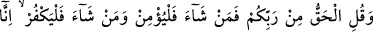
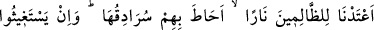
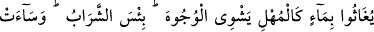
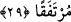

Allah’ım bizi cemâlinin nûruna nazar edenlerden ve sana vâsıl olma şerefiyle
şereflenenlerden kıl.
29. Ve de ki: Hak, Rabbinizdendir. Öyle ise dileyen îman etsin, dileyen inkâr
etsin. Biz, zalimlere öyle bir cehennem hazırladık ki, onun duvarları kendilerini
çepe çevre kuşatmıştır. (Susuzluktan) imdat dileyecek olsalar imdatlarına, erimiş
maden gibi yüzleri haşlayan bir su ile cevap verilir. Ne fenâ bir içecek ve ne kötü
bir kalma yeri!
Ey Muhammed (a.s.), nefislerinin arzularına uyan şu gafillere “de ki; Hak,
Rabbinizdendir.” Allah tarafındandır, hevâ ve hevesin gerektirdiği değil. Çünkü
hevânın gerektirdiği bâtıldır. Ya da bu bana vahyedilen Rabb’inizden olan haktır. Hak
gelmiş, artık illetler/mâzeretler ortadan kalkmıştır. O halde kendiniz için dilediğiniz
kurtuluş ya da helâk yolundan birini seçmekten başka yapacağınız bir şey kalmamıştır.
et-Te’vîlâtü’n-Necmiyye’de şöyle der: “Müjdeleme, korkutup uyarma, saâdet ehlinin
yollarına sülûk ve şakâvet ashâbının helâk olduğu yerlerden korunmayı açıklama
husûsunda “Hak, Rabb’iniz katındandır.” “Öyle ise” saâdet ehlinin nefislerinden
“dileyen îman etsin,” şakâvet ehli olanların kalplerinden “dileyen inkâr etsin”
el-İrşâd’da şöyle der: “Öyle ise dileyen” diğer mü’minler gibi “îman etsin,”
neredeyse ileri sürmek için uygun olmayan bahaneler göstermesin “dileyen inkâr
etsin.” Îman edenin îmânı ve inkâr edenin inkârı beni ilgilendirmez. Hak açıkça belli
olup iş bütün yönleriyle açıklığa kavuştuktan sonra sizin îman etmenizi umup hevânıza
uyarak samimi mü’minleri kovamam. Bu bir muhayyer bırakma değil, tehdid ve
korkutmadır.
Bu ifâde ile kasdedilen şudur: Allah Teâlâ’ya sizin inanmanız fayda sağlamaz, inkâr
etmeniz de zarar vermez. Şu halde dilerseniz îmân edin, dilerseniz inkâr edin. Eğer
inkâr ederseniz bilin ki Allah size azâb edecektir. Îman ederseniz bilin ki O sizi
mükâfâtlandıracaktır. Nitekim el-Es’iletül-Mukhime’de böyle denilmektedir.
Allah Teâlâ: “Eğer inkâr ederseniz bilin ki Allah sizden müstağnîdir” yâni sizin
îmânınıza muhtaç değildir. Her ne kadar bazıları hakkındaki irâdesi buna taalluk etse de
“Kullarının inkârından hoşnud olmaz.” Yâni O’nun sonsuz rahmeti, küfür sebebiyle
kullarının zarar görmesinden hoşnud olmaz. “Eğer” Allah’a “şükrederseniz” ve îman
ederseniz “sizden” şükrünüzden “hoşnut olur.” (ez-Zümer, 39/7)